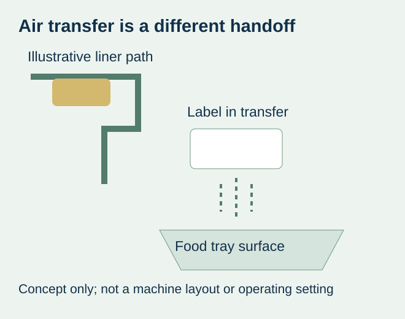
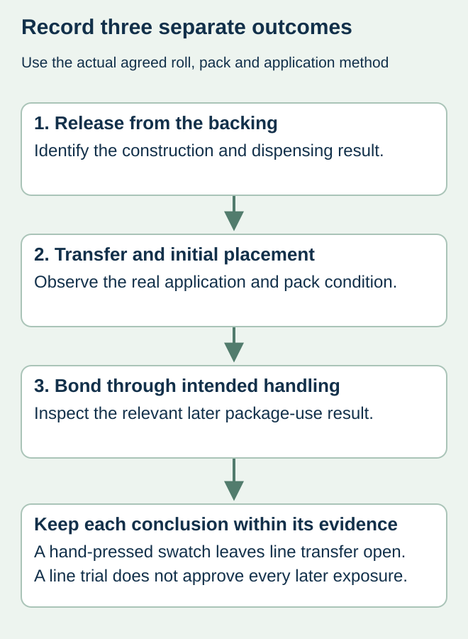

A food packer approves a label pressed onto a tray by hand. Production uses a blow-on applicator, and the label does not transfer or settle consistently. Asking for “the same roll, but stickier” skips a basic question: did the approved sample represent the production application method?
Specify blow-on application before the label construction is selected, and judge a representative roll on the actual approved setup. Separate release from the liner, transfer to the pack and the bond after application. A hand-pressed sample can help examine appearance or a particular surface interaction, but it does not demonstrate non-contact transfer on the line.


Name the application method in the label request
“Automatic labeling” is not enough detail. Ask the equipment owner to identify how the label leaves the backing and reaches the package, including whether the system uses non-contact blow-on or an actual contact operation. Do not infer the method from a machine photograph or a general model-family name.
HERMA’s food-industry material guidance describes blow-on as applying the label by air rather than pressing it onto the surface, and identifies high initial tack as important for that process. Its named material examples remain manufacturer-specific. They establish neither an approved ZFU construction nor a universal adhesive requirement for every machine and food pack.
For the proposed job, identify the complete face, adhesive and liner together with the converted label. Keep relevant roll dimensions, orientation and equipment interface in the inquiry. Those inputs help the supplier assess a trial proposal; this article does not specify air pressure, machine speed, head spacing or other operating settings.
Locate the first unsuccessful handoff
| Observed stage | Question for the responsible supplier or equipment owner | Avoid concluding |
|---|---|---|
| Release from liner | Does the identified construction dispense as required on this setup? | Every transfer problem needs stronger package adhesion |
| Transfer to the package | Does the actual application method place the label consistently? | A hand-pressed sample represents air transfer |
| Initial placement | What was the real pack surface and condition at application? | A dry demonstration covers damp production packs |
| Later handling | Does the applied label meet the agreed package-use criteria? | Successful transfer proves storage and handling durability |


Make the trial representative without turning it into a recipe
Have the equipment owner, label supplier and responsible quality person agree the sample and permitted trial conditions. Use the proposed roll construction and actual or agreed representative package. Record the filled-pack state where it affects shape or presentation. Keep an unambiguous link between the roll identity, package and observations.
A hypothetical chilled-food tray may be dry in a meeting-room demonstration and damp at the production station. A pouch can also present a different surface when supported or filled. Record those differences rather than treating the pack name as a sufficient specification. Which conditions must be represented is a project decision for the responsible parties; no numerical acceptance threshold is invented here.
Retain a labeled pack and an identified unused strip where the agreed evaluation calls for them. Record where a problem first appears: before the label leaves the backing, during transfer, at initial contact or after later handling. The release-versus-adhesion guide explains why a laboratory release result and the eventual package bond answer different questions.
Keep the evidence boundary visible
If the supplier sends only hand-applied samples, use them for the decisions they actually represent and leave machine transfer open. If an evaluation uses a different liner, size or application method, ask which conclusions still apply to the order. A similar-looking label is not proof that the proposed converted roll will behave identically.
Once the actual application result is acceptable under the agreed criteria, evaluate the relevant later storage and handling separately. A label reaching the tray does not establish wet-use performance or the suitability of its food-contact arrangement. Material documentation must refer to the actual construction and intended use rather than an unrelated supplier example.
Resolve the purchasing question before ordering the full quantity
Choose a construction for which the relevant application evidence is available, or agree a representative trial before the larger order. If suitability remains unresolved, keep that limitation visible in the quotation and schedule. Do not call the roll production-approved because its core fits or the artwork looks correct.
Changing the machine, material and package presentation together may conceal which change mattered. Let the responsible technical owners define the safe comparison. This website supplies label inquiries; it does not promise applicator commissioning, guaranteed blow-on grades or a particular line rate.
Discuss the unresolved label requirement
Provide the applicator make/model and confirmed application method, actual food pack and surface condition, label dimensions, current construction, roll interface and the point where a trial fails. Ask for a project-specific construction and representative roll proposal. Review the food-label product scope and prepare a label specification inquiry. The contact page opens an email draft and lists email or WhatsApp for attachments. Supply, proof options, testing, pricing and timing require project confirmation.